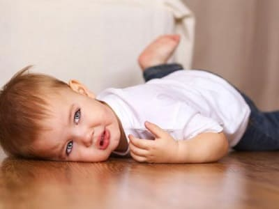
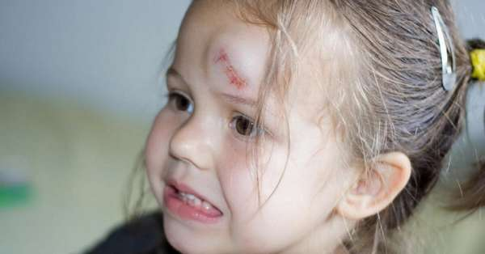
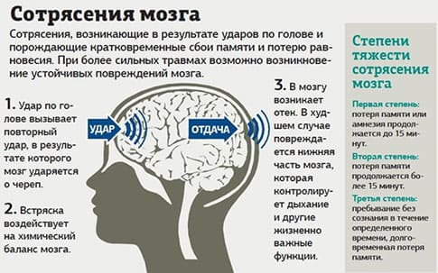
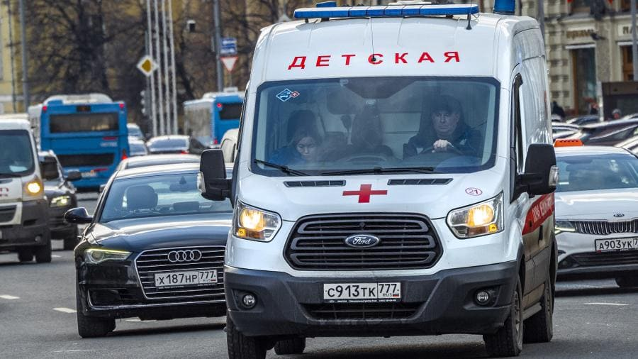
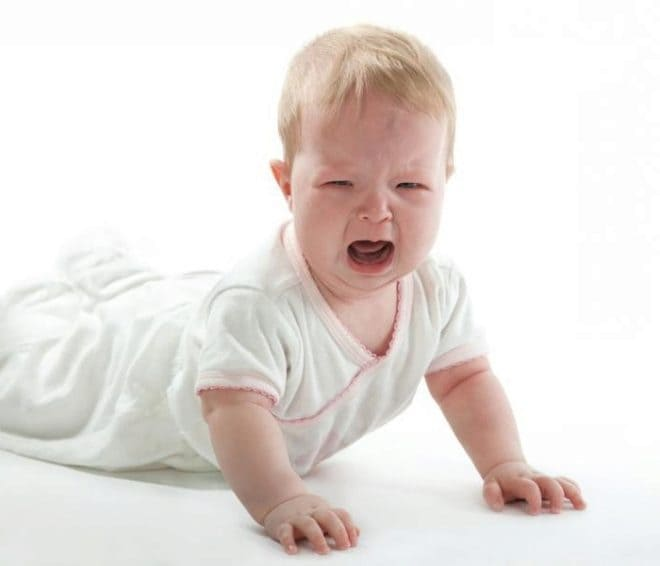
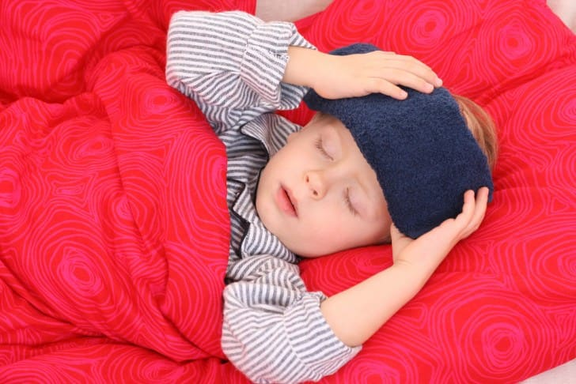
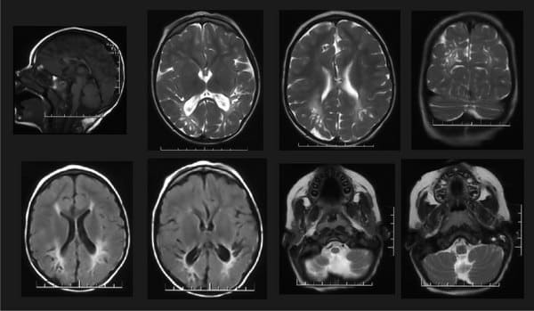
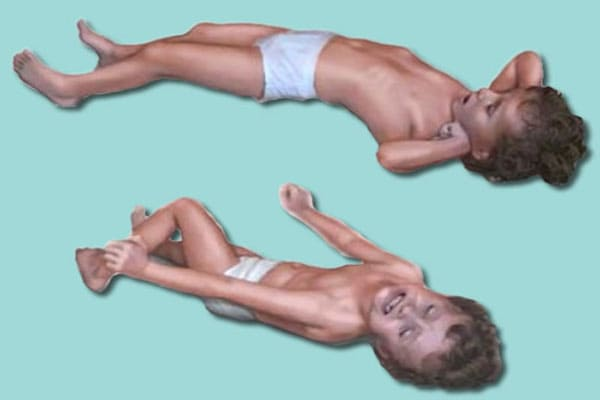

ТРАВМЫ ГОЛОВЫ (ЧЕРЕПНЫЕ ТРАВМЫ)
Нет другого такого звука, который заставлял бы вашу спину покрываться мурашками, как грохот, с которым голова вашего ребенка ударяется о твердый пол.

Гематомы и кровотечения из кожи головы возглавляют список звонков врачу по поводу травм. Важно отличить травму черепа от травмы мозга. Череп выполняет роль защитного шлема для хрупкого мозга, а поверх черепа имеется очень богатая кровеносными сосудами кожа головы. В подавляющем большинстве случаев ушибы приводят лишь к повреждениям кожи головы, из которой при ранении вытекает много крови или в которой образуются большие опухоли (гематомы) из-за разрыва кровеносных сосудов под кожей. Не пугайтесь того, как быстро растут эти огромные шишки. Они так же быстро проходят, если приложить лед и давление. Эти шишки и кровотечения обычно ограничиваются лишь кожей головы и редко указывают на то, что затронут нижерасположенный мозг.

Главное опасение после любого удара головой – это травма головного мозга, которая может выражаться в двух формах: кровотечения и сотрясения мозга. Когда разрываются мелкие кровеносные сосуды между черепом и мозгом или внутри мозга, в этом пространстве возникает кровотечение, и скопление крови сдавливает мозг. Давление на мозг в связи с кровотечением или сотрясением мозга, сопровождающимся появлением опухоли, дает явные симптомы повреждения мозга.

ОСОБОЕ ПРИМЕЧАНИЕ. Относитесь серьезно к колотым ранам головы. Снаружи они могут казаться пустячными, но, к примеру, гвоздь может пройти через кожу головы и череп и привести к опасному воспалению головного мозга. Сразу дайте знать врачу.
На что смотреть – когда волноваться
Если ребенок находится без сознания, но дышит и его кожа имеет розовый цвет (губы не синие), положите его на ровную поверхность и вызовите скорую. Если у вас имеется причина подозревать травму шеи, не двигайте ребенка с места, предоставив его транспортировку опытным профессионалам. Если ребенок не дышит, проводите сердечно-легочную реанимацию или, если у ребенка судороги, следите за тем, чтобы не перекрылись его дыхательные пути.

Иногда, если ребенок очень впечатлительный и часто закатывает истерики, злость после падения заставляет ребенка надолго задерживать дыхание, что может быть ошибочно принято за судороги. Это естественным образом вызывает панику, и родители несутся с ребенком в больницу. Даже если выяснится, что в этом не было нужды, лучше перестраховаться. Мы говорим своим пациентам: «Когда сомневаетесь, возьмите ребенка и посидите у дверей приемного покоя».
Период наблюдения
Если у ребенка ясное сознание, он ходит, говорит, играет и ведет себя совершенно так же, как до падения, выдайте ему дозу родительского сочувствия, приложите к порезу или шишке на 20 минут пакет льда и, прежде чем звонить врачу, понаблюдайте. Период наблюдения необходим потому, что врачу важнее знать, как ребенок ведет себя после ушиба, а не что произошло. Если поврежден мозг, симптомы могут появиться мгновенно, или же они могут медленно нарастать в течение следующих 24 часов.
После периода наблюдения, в зависимости от состояния ребенка, вы можете звонить или не звонить врачу.
Помимо любого списка экстренных ситуаций, когда нужно срочно звонить врачу, есть еще заглушающий все и вся внутренний голос, так ценимый матерями, который я называю материнским сигналом тревоги. Я пришел к осознанию того, что нужно доверять этой системе мониторинга не меньше, чем любой хитроумной электронике. Если этот внутренний голос говорит вам, что не все в порядке, позвоните врачу и сообщите ему о состоянии своего ребенка, спросите совета и, помимо прочего, скажите врачу, почему вы так озабочены.
Вот на что следует обращать внимание в ближайшие двадцать четыре часа.
Изменения в поведении ребенка во сне
Для маленьких детей совершенно нормально после травмы уйти в сон, что делает обычное наставление «смотрите, не вернется ли к нему сознание» источником ужасной родительской тревоги.
Если ушиб головы произошел ближе к ночи или в привычное для ребенка время дневного сна и малыш уже был утомленным, еще до травмы, вы можете безуспешно ломать голову, вызвана ли сонливость травмой или же просто пришло время для естественного погружения ребенка в сон.
И может быть совершенно невозможным соблюсти совет: «Только не позволяйте ребенку уснуть». Пусть ребенок спит, а вот вы просыпайтесь каждые два часа и осматривайте ребенка.
Симптомы повреждения головного мозга
Если после ушиба головы у вашего ребенка отмечается любой из нижеследующих симптомов, звоните врачу или везите ребенка в больницу.

• Потеря ориентации, проблемы с пробуждением;
• необычное дыхание во сне;
• косоглазие, неравные зрачки;
• неукротимая рвота;
• все увеличивающаяся бледность;
• из слухового прохода сочится кровь или водянистая жидкость;
• судороги;
• ребенок теряет равновесие, когда сидит, ползает или ходит.

Обратите внимание на:
• изменение цвета кожи от розового к бледному или, что еще опаснее, к голубому;
• изменение дыхания: периоды очень поверхностного дыхания, эпизоды остановки дыхания продолжительностью 10–20 секунд, за которыми следует неровное, нерегулярное дыхание, или периоды, когда ребенок начинает прерывисто хватать воздух (не забывайте, что у новорожденных дыхание и в норме неровное);
• подергивания с одной стороны тела, охватывающие целую конечность.
Если цвет кожных покровов ребенка и его дыхание в норме (никаких изменений по сравнению с обычными характеристиками) и ваша родительская интуиция говорит вам, что все в порядке, нет нужды будить ребенка, если только вам не рекомендует сделать это врач. Глубокий сон, в который ребенок погружается после травмы, практически всегда сопровождается поверхностным, нерегулярным дыханием, которого вы, скорее всего, еще никогда не наблюдали.
Если же вы пребываете в неуверенности или внешний вид ребенка вызывает у вас тревогу, попробуйте частично разбудить его. Посадите ребенка или поставьте, а затем снова положите. В норме ребенок после этого немного повозится и помечется в кровати, чтобы снова удобно устроиться и уснуть. Если ребенок ведет себя иначе, попробуйте полностью пробудить его, усадив или поставив на ноги, открыв его глаза и позвав по имени. Если ребенок проснулся, смотрит на вас, начинает плакать или улыбаться и вырывается, чтобы вы отпустили его и не беспокоили, вы можете спокойно снова ложиться спать. Если же ребенок не протестует, никак не может проснуться в достаточной степени для того, чтобы заплакать, если он бледный, у него нерегулярное дыхание и обильно течет слюна или имеются какие-либо признаки повреждения мозга, немедленно обратитесь за медицинской помощью.
Изменения в чувстве равновесия и координации
Днем признаки повреждения мозга увидеть легче. Понаблюдайте за игрой ребенка. Делает ли он все точно так же, как до падения: сидит прямо, ходит хорошо, двигает руками и ногами нормально? Или же он теряет равновесие, пошатывается, волочит одну ногу или все хуже ориентируется? Если ребенок еще не ходит, не замечаете ли вы каких-либо изменений в том, как он сидит или ползает, или в том, как он манипулирует игрушками, держа их в руках?
Рвота
Точно так же, как одни дети после ушиба головы впадают в сон, у других детей открывается рвота, по большей части от расстройства, вызванного падением и болью. Не беспокойтесь. А вот неукротимая рвота в течение шести или 24 часов является тревожным признаком. Немедленно звоните своему врачу. Осторожности ради не давайте ребенку, оправляющемуся после травмы, ничего, кроме пустой воды, в течение трех-четырех часов. Кормление грудью имеет терапевтический эффект.

Во славу простого пакета со льдом
Дети с ушибами относятся к холодным предметам, приложенным к больному месту, не слишком дружелюбно. Холод снимает боль, уменьшает кровотечение и гематому. Но только не голый лед на голую кожу, пожалуйста. Это может привести к обморожению тканей. Вы можете купить мгновенные пакеты льда, которые не текут, и держать их в шкафчике с медикаментами, или же вы можете изготовить собственные: положите кубики льда в носок или в носовой платок. Если вы используете полиэтиленовый пакет, заверните его в тонкую ткань или мокрую салфетку. Из колотого льда в носке получается пакет, которому можно легко придать любую форму. Вы можете держать про запас кубики льда в игрушке из махровой ткани. У себя в морозилке мы всегда держим кролика Бо-бо, который стал надежным другом шишек и гематом, а также лучшим лекарем души в тех случаях, когда травмируется только хрупкая чувствительная детская натура. Из пакетов с морожеными резаными овощами тоже получаются замечательные холодные компрессы, а холодный леденец или кусочек замороженного сока помогает опухшим губам. Если ребенок терпит приложенный лед, начинайте постепенно увеличивать давление; можно держать до 20 минут. Если вы дадите своему двухлетнему малышу придерживать рукой пакет со льдом, он отнесется к процедуре более благосклонно.

Глаза
Глаза отражают происходящее внутри, особенно внутри мозга.
Задняя сторона глаз настолько тесно соединена с головным мозгом, что при осмотре ребенка после травмы головы врач смотрит на заднюю часть глаз в поисках признаков отека мозга.
Глаза ребенка оценить сложнее, чем другие изменения, но вот когда нужно вызывать врача: если у ребенка наблюдается косоглазие или глаза закатываются, если один зрачок больше другого, если ребенок спотыкается и падает или наталкивается на предметы, что указывает на нарушения зрения.
Если ребенок постарше, прибавьте к списку тревожных симптомов жалобы на то, что в глазах двоится или перед глазами одно сплошное пятно.
Как насчет рентгена черепа?
За исключением тяжелых травм головы или очевидных переломов, в рентгене черепа необходимость возникает редко; нет также нужды везти в больницу на рентгенограмму весело играющего ребенка. Сначала понаблюдайте; затем позвоните своему врачу; и только затем последует совет относительно того, стоит ли делать ребенку рентген. Аксиальная компьютерная томография, представляющая собой серию рентгенограмм поперечных срезов мозга, практически полностью заменила обычный рентген. В большинстве случаев, если ребенку нужен рентген, лучше сделать аксиальную томографию. Этот технологический прорыв дает о повреждении гораздо больше информации, такой как наличие в мозге кровотечения или отека.

НЕБОЛЬШОЕ ПРИМЕЧАНИЕ. В жизни ребенка, с учетом многократных ударов маленьких голов о твердый пол, травмы головного мозга – явление редкое.
Судороги (конвульсии)
Судороги, или конвульсии, также называемые припадками, вызываются патологическими электрическими разрядами в головном мозге и сотрясают не только детей, но и их родителей. Степень их тяжести варьируется от подергивания одной мышцы до сотрясения всего тела, которое называется большим припадком и может также сопровождаться падением на пол и катанием по полу, закатыванием глаз, появлением пены у рта, прикусыванием языка и временной потерей сознания.

Ваша первостепенная задача при конвульсиях заключается в том, чтобы не допустить перекрытия дыхательных путей языком или выделениями, что лишит головной мозг кислорода. Большинство судорог в младенческом возрасте связано с высокой температурой тела. Приступы таких судорог кратковременные, прекращаются сами по себе и редко приносят ребенку ущерб, но вот родители после них могут дергаться еще долго. Если вы стали свидетелем судорог, делайте следующее:
• Для безопасности положите ребенка на пол, лицом вниз, или на бок, так чтобы язык вывалился вперед и жидкость вытекала из глотки под действием силы тяжести.
• Не вкладывайте в рот ребенка какую-либо пищу или напитки во время судорог или сразу после них; также не следует препятствовать подергиваниям ребенка.
• Если губы у ребенка не посинели и он дышит нормально, нет причин для беспокойства.
• Хотя это маловероятно, если губы ребенка становятся синими и он не дышит, сделайте искусственное дыхание рот в рот, предварительно прочистив дыхательные пути.
• Чтобы мечущийся ребенок не ударился о мебель, расчистите место вокруг.
После судорог дети обычно впадают в глубокий сон. Кроме того, у маленького ребенка обычно вслед за первыми судорогами через несколько минут случается второй приступ, особенно если судороги вызваны высокой температурой. Чтобы не допустить этого, если после судорог ребенок горит, поставьте ему суппозиторий с ацетаминофеном (если вы дадите лекарство через рот, это может вызвать рвоту). Снимите с ребенка одежду и охладите тело ребенка путем обтираний губкой.
Вообще имеет смысл сразу же по окончании судорог вызвать врача или доставить ребенка в приемный покой. Или же в зависимости от обстоятельств вы можете начать наблюдение, как описано выше, в статье, посвященной травмам головы. Период наблюдения может иметь смысл, если ребенок до судорог чувствовал себя замечательно, а потом резко поднялась температура, после чего случился короткий приступ судорог, и теперь ребенок чувствует себя хорошо. Держите температуру под контролем, и вы можете спокойно переждать несколько часов, вместо того чтобы звонить своему врачу или нестись в больницу в три утра. Но любые судороги, не связанные с температурой или случившиеся у ребенка, имеющего больной вид, заслуживают неотложной медицинской помощи. Имеет смысл применить все средства для снижения температуры (дать жаропонижающее и остудить организм), прежде чем отправиться в больницу, поскольку все поднимающаяся температура может вызвать еще несколько приступов по дороге.
Марта, Уильям, Роберт, Джеймс Сирс"Ваш малыш от рождения до двух лет"